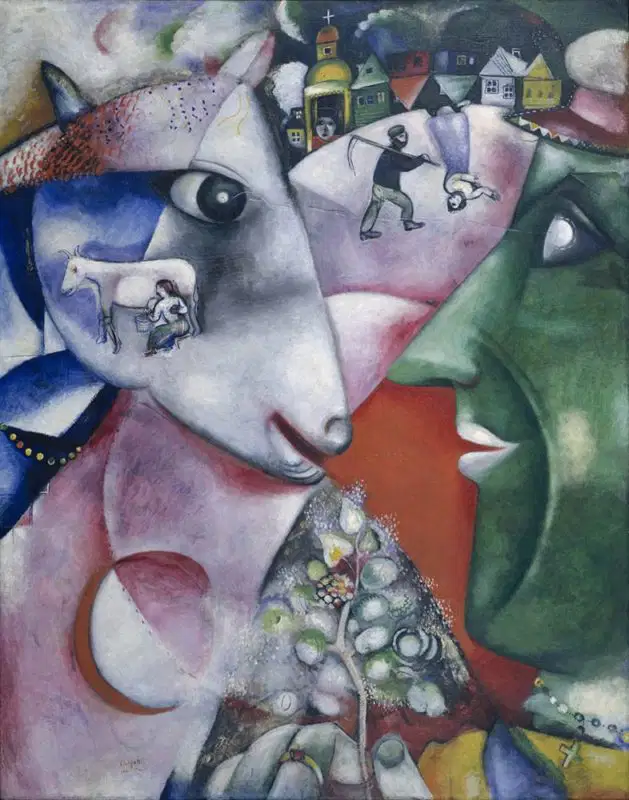
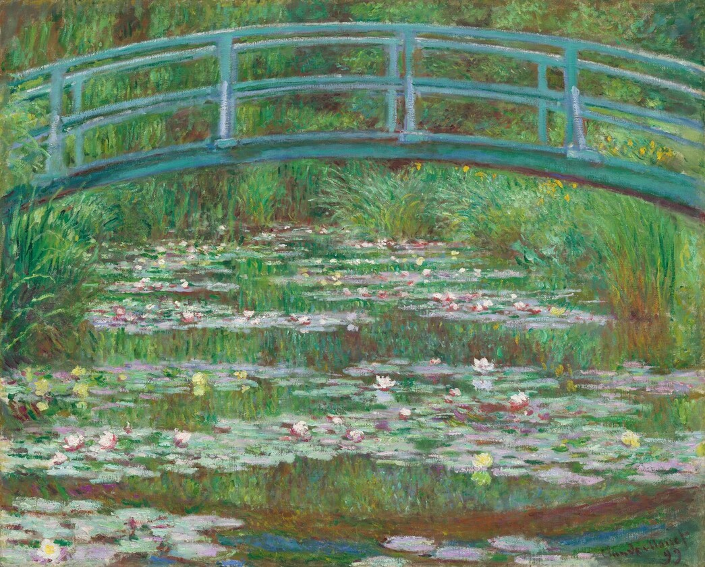
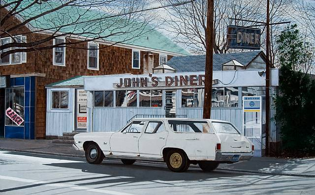
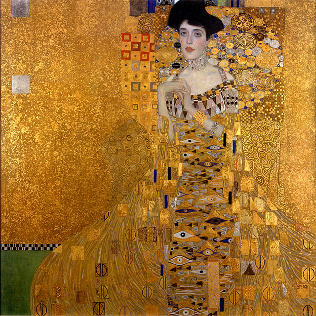
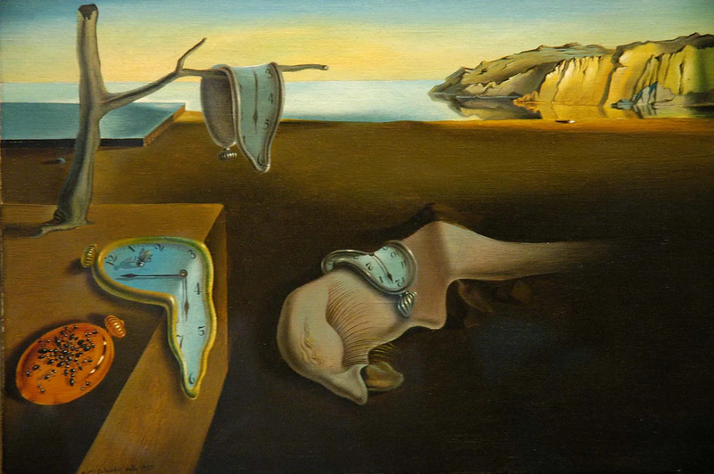
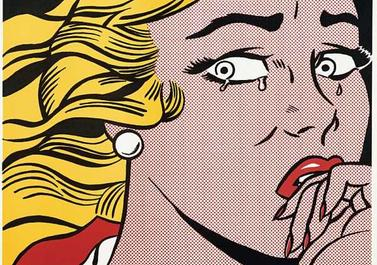

There are a wide variety of different styles used within the art world. Listed below are just a few examples of such creations.
| Cubism | Early 1900s |
|---|---|
| Impressionism | Mid to late 1800s |
| Photorealism | Mid to late 1900s |
| Art Noveau | Late 1800s |
| Surrealism | Early 1900s |
| Pop Art | Mid 1900s |
An abstract art style that makes use of geometric shapes and experimental concepts. Artists who use this style take preexisting objects or beings and break them down into simplified shapes, resulting in visually intruiging works of art.
"I and the Village" by Marc Chagall
A style of painting developed in France during the mid to late 19th century. It aims to give off a fuzzy, dream-like feeling. Most artists who utilize this style use brief brush strokes, unblended and vibrant colors, and an emphasis on lighting.
"The Japanese Footbridge" by Claude Monet
A style that aims to accurately replicate photographs taken of real-life objects. Artists who use this style try their best to attempt to replicate images in a hyper-realistic manner.
"John's Diner with John's Chevelle" by John Baeder
A decorative art style that makes use of long and sinuous lines. It is inspired by the natural curves and twists of flowers. Art Nouveau is a style laced with delicate ornamentation.
"Portrait of Adele Bloch-Bauer I" by Gustav Klimt
A style that aims to warp how reality is percieved. Logic is not a common thing in Surrealism. The art style features many bizarre, wacky visuals and can be compared to how dreams typically present themselves.
"The Persistence of Memory" by Salvador Dalí
A loud, fun art style that consists of vibrant colors and visuals commonly borrowed from popular culture. The style exists to create critical or ironic pieces towards traditional fine art values. Commonplace items like road signs, hamburgers, cans, cartons, and other items similar are typically the subject matter.
"Crying Girl" by Roy Lichtenstein